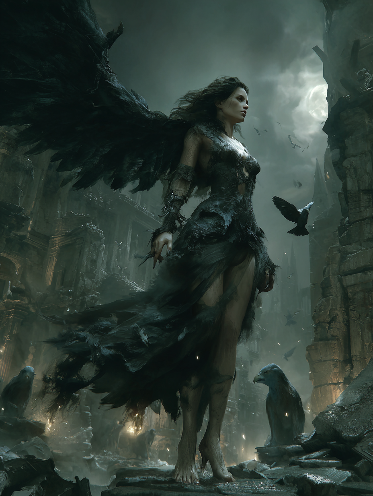

Overview
Physical Form
The ancient primary record describes her as a creature of desolate places — specifically the ruins of cities after divine judgment. She is winged. The Hebrew term lilit in Isaiah is rendered as "night owl," "screech owl," or "night creature" depending on the translation, but the underlying quality is consistent: something that moves in darkness, perches in places that should be inhabited but are not, and calls out with the sound the wilderness makes when it reclaims what was built. Her form in later Aramaic tradition: tall, female, beautiful in the way that certain venomous things are beautiful — the beauty that is a function, not a decoration. Winged. Hair unbound. Eyes that do not reflect light normally.
The Isaiah Record
Isaiah 34 describes the divine judgment on Edom — a nation made into permanent desolation. The chapter lists the creatures that will inherit the ruins: owls, ravens, jackals, ostriches, wild goats, hyenas. And then — in verse 14, between the wildcats and the night owl — lilit. She rests there. She finds herself a resting place. The Hebrew verb used (matzah) implies that she seeks and finds — she is not placed there as decoration but arrives with intention and settles. This is not a passing reference to a generic owl. In a chapter cataloguing the specific, named inhabitants of divine desolation, the lilit is specifically named because she is a specific being. The ancient audience understood the distinction. Something with a name is different from something with a description.
The Dead Sea Scrolls Record
4Q510–511 (Songs of the Sage) from the Dead Sea Scrolls are liturgical texts — protective incantations composed against supernatural threats. Among the beings listed against which the sage composes his protective songs: liliths. The plural form appears here alongside other categories of malevolent supernatural beings. This is not myth — it is operational. Someone at Qumran composed specific liturgical protection against beings of this category, which means the community understood these beings as present dangers requiring active countermeasures. The gap between Isaiah (800 BCE) and the Songs of the Sage (1st c. BCE) spans seven centuries. She does not diminish across that span. She intensifies.